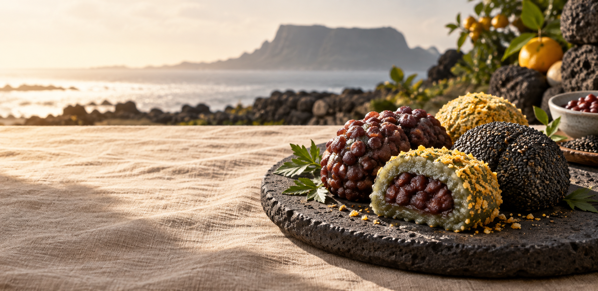
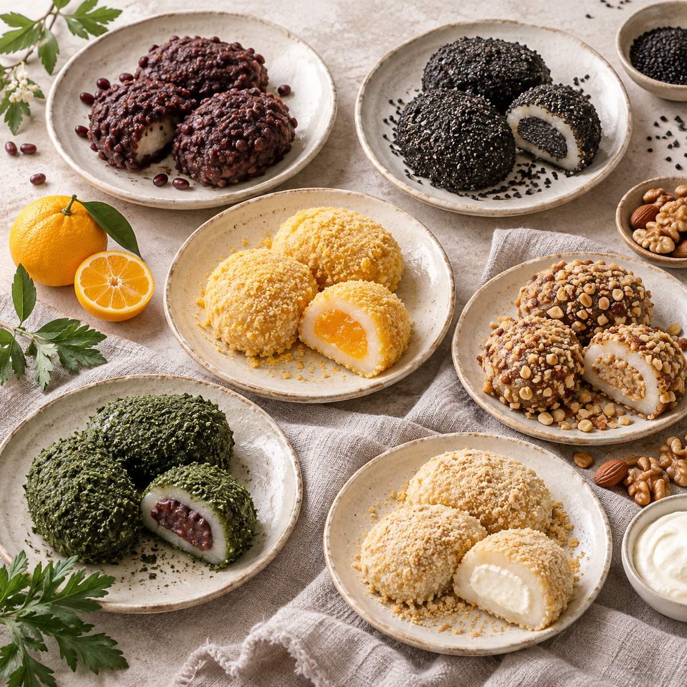
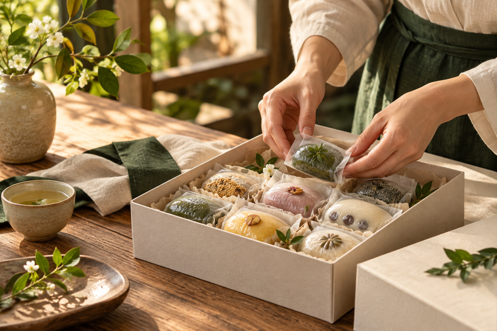
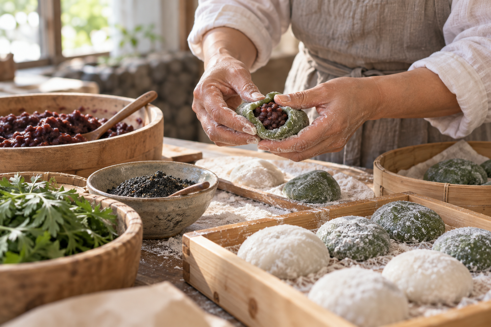
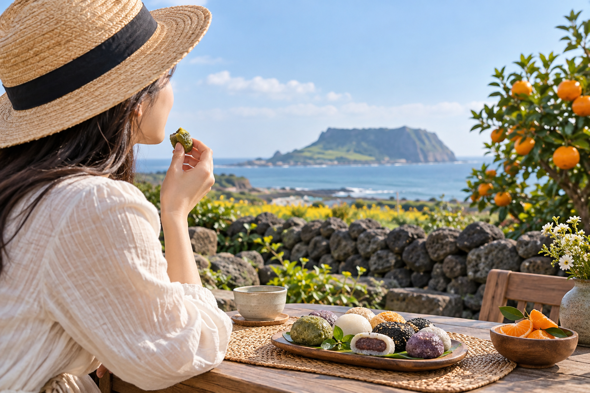

원가와 광고비가 오를 때
매출만 늘리는 운영이 아니라, 상품별로 실제 남는 이익을 확인하며 예산을 쓰겠습니다.

JEJU · DONGMUN MARKET · OMEGI TTEOK
01 / THE STORY
제주 동문시장에 자리한 시루원은 오메기떡을 다양한 맛으로 소개합니다. 팥과 흑임자의 익숙한 풍미부터 귤과 크림 계열까지, 고르는 순간도 제주 여행의 일부가 됩니다.
여행 중에는 들러서, 집에 돌아가서는 온라인으로. 시루원의 맛을 만나는 길을 한곳에 모았습니다.
온라인 상품 보러 가기02 / FIND YOUR FLAVOR
전통적인 맛을 좋아한다면 팥과 흑임자, 색다른 간식을 찾는다면 귤과 크림 계열을 살펴보세요. 실제 구성과 재고는 주문 채널에서 확인할 수 있습니다.
구성 확인하기
A LITTLE PIECE OF JEJU
여행에서 좋았던 순간을
누군가의 일상에 건네는 방법.

03 / SHARE THE MOMENT
가족과 동료, 고마운 사람을 떠올리며 고르는 제주 간식. 여러 맛을 함께 즐길 수 있는 혼합 구성을 살펴보세요.
04 / THE TASTE OF CARE
오메기떡을 고를 때 궁금한 것은 맛뿐만이 아닙니다. 어떤 구성인지, 어떻게 받아보고 보관하는지, 선물하기 좋은지도 중요합니다.
주문 전 필요한 정보는 상품 상세페이지에서 확인해 주세요. 이 페이지의 이미지는 제품 이해를 돕는 연출 시안입니다.


FOR JEJU SIRUWON
시루원 대표님께 드리는 제안
이 페이지는 그 가능성을 보여드리기 위한 홍보 시안입니다. 제안서에는 2026년 소비 환경과 시루원의 공개 자료를 바탕으로, 매출과 이익을 함께 살피는 실행 계획을 담았습니다.
매출만 늘리는 운영이 아니라, 상품별로 실제 남는 이익을 확인하며 예산을 쓰겠습니다.
동문시장 방문, 선물 수요, 온라인 주문을 한 흐름으로 연결하고 채널별 반응을 측정하겠습니다.
월 매체비 100만 원을 시험 예산으로 제안합니다. 4주차에 점검하고 8주차에 지속 여부를 결정합니다.
※ 예산과 예상 성과는 내부 매출·원가 자료 확인 전의 가정이며, 성과를 보장하는 수치가 아닙니다.